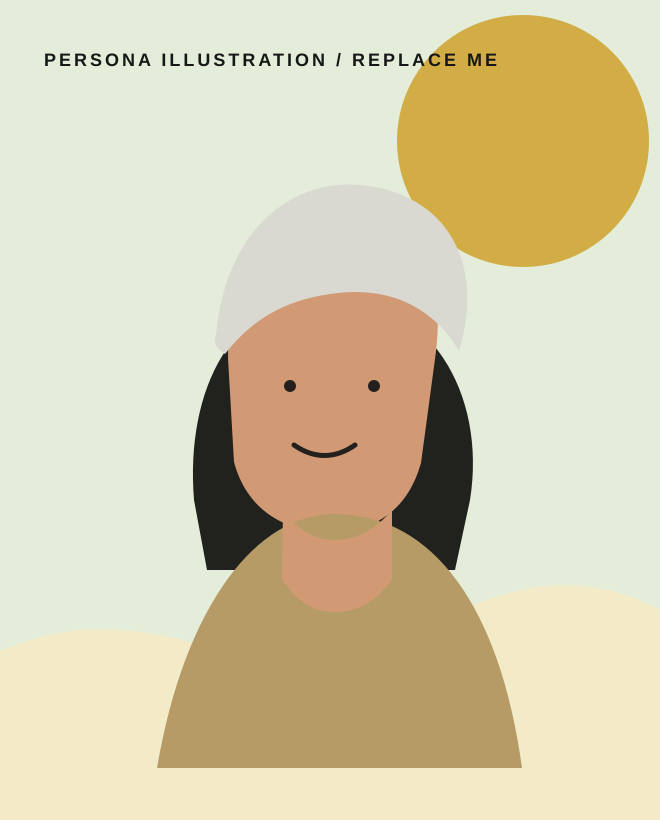
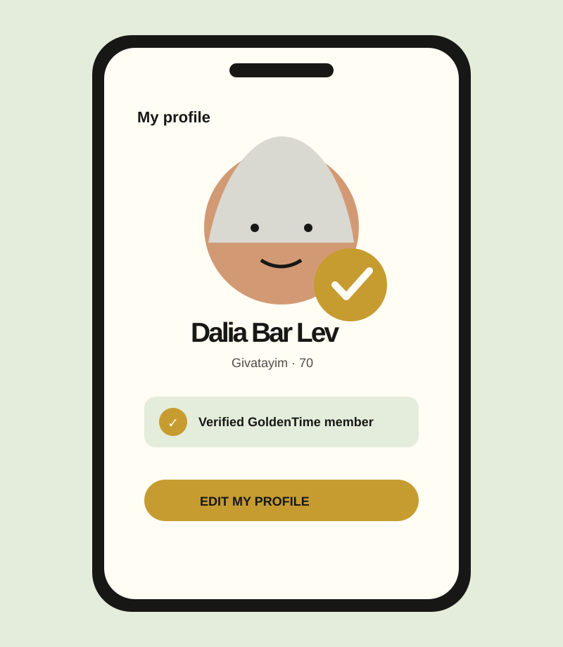

A warm welcome
Set expectations in clear, human language.
Combating Loneliness Through High-Trust Onboarding
See it live
01 / The opportunity
GoldenTime was born from a mission to address a critical issue facing older adults: daily loneliness. It is a shared-experience social platform where people can create or join local leisure activities — from a simple coffee meeting to a walk or museum visit. It is intentionally not a dating app; it makes low-pressure companionship feel safe, local, and possible.
02 / Research insights
For seniors, digital safety is not a feature; it is a dealbreaker. Identity verification needed to earn trust before the first social interaction, without feeling invasive.
Many older adults worry that one wrong click will break something permanently. Registration had to feel like a reassuring conversation, not a technical test.
Age-related sensory and motor changes can make standard mobile patterns frustrating. Oversized hit areas and high-contrast typography became foundational, not decorative.
People may want connection but avoid the stigma of dating products. The experience needed language and cues that clearly centered shared activities and companionship.
03 / Designing with someone in mind

“I miss doing things with friends. At my age, I’m left to deal with everything alone.”
04 / High-trust interaction
The solution
Rather than presenting verification as a formality, the journey frames it as a visible layer of protection. Conversational, chunked onboarding makes every step comprehensible, and a persistent progress indicator removes uncertainty about what comes next.
Set expectations in clear, human language.
One focused task at a time with roomy touch targets.
Guidance turns a difficult request into a protected step.
A clear reward makes the trust benefit immediately visible.
05 / The experience

06 / A visible finish line
Verification is the moment the product’s promise becomes concrete. A recognizable profile badge turns an invisible system into a clear social signal: this person took the same safety steps you did.
✓ Verified account result